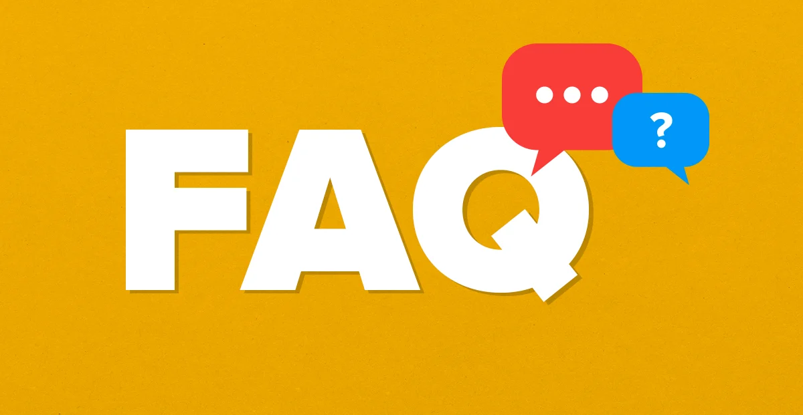

Resume Support
Craft a Resume That Tells Your Story
Your resume is often your first impression. It is a chance to show your strengths, skills, and experiences in a way that helps employers quickly understand what you can contribute. Whether you are starting from scratch or improving an existing draft, these resources can help you build a clear and effective resume.
UMSI students are prepared for many kinds of roles, including UX, product, research, and data. A strong resume helps you connect your coursework, projects, and experiences to the opportunities you want next.
Need feedback? You can meet with a CDO Career Coach to review your materials.
Resume Writing Made Easier
5 Steps to Get Started
- Start with a strong template: use a clean format that is easy to scan.
- List your experiences: include jobs, internships, coursework, projects, and volunteer work.
- Write strong bullets: use action verbs and show your impact or results.
- Tailor for each role: adjust your resume to match the opportunity.
- Review and revise: proofread carefully and ask for feedback.

What Employers Want
Employers want resumes that are easy to scan, specific, and relevant. A strong resume does not only list responsibilities. It highlights what you did, how you did it, and why it mattered.
Resume Resources
- UMSI Resume Guide and Rubric — guidance on formatting, structure, and sample accomplishment bullets.
- Writing Effective Resume Bullets — tips for writing stronger, more specific bullet points.
- Resume Rubric — criteria you can use to evaluate your own resume.
- Application Materials Support — coaching, workshops, and additional resume help through the CDO.
Ready for review? Book a resume review appointment with a CDO Career Coach .
Resume FAQ

- How long should my resume be? For most UMSI students and recent graduates, one page is best.
- Do I need a different resume for each application? Yes. Tailoring helps your resume match the role more clearly.
- Can I include coursework or class projects? Yes. Relevant projects are often important evidence of your skills.
- How often should I update my resume? Update it each semester or whenever you finish a major project or role.
Quick Actions: What to Do This Week
If you only have 30 to 60 minutes, focus on a few small changes that can make a big difference.
- Pick one target role: choose one posting and tailor your resume to it.
- Update three bullets: rewrite them using action + method + result.
- Add relevant keywords: include tools, methods, and skills only if they are accurate.
- Proofread once out loud: this helps catch small wording and grammar issues.
Tailor Your Resume to a Job Posting
A strong resume is not one-size-fits-all. Tailoring means highlighting the parts of your background that best match the priorities of a specific role.
Step 1: Highlight keywords
Look for repeated tools, skills, and responsibilities in the posting.
Step 2: Match your evidence
Revise bullets so your experience clearly shows those skills.
Step 3: Reorder for relevance
Move the most relevant projects or experiences closer to the top.
Keyword Examples Common in UMSI Roles
- User research, usability testing, interviews, surveys, synthesis
- Wireframes, prototypes, Figma, interaction design, information architecture
- SQL, Python, data cleaning, dashboards, analysis, A/B testing
- Stakeholder communication, requirements, documentation, collaboration
Action Verbs by Category
Strong bullets often begin with clear verbs that describe your work accurately.
Research & UX
Conducted, interviewed, observed, synthesized, evaluated, tested, analyzed
Data & Analytics
Cleaned, queried, modeled, visualized, automated, validated, optimized
Product & Collaboration
Collaborated, coordinated, facilitated, presented, documented, aligned, delivered
Resume Review Plan
Good feedback is easier to get when your resume is already close to ready.
- Self-check: make sure formatting is consistent and bullets show impact.
- Peer review: ask one classmate to check clarity and missing details.
- Career coach review: bring a job posting and your tailored resume to the appointment.
Bring These to Your Review
- The job posting link or copied description
- Your current resume as a PDF
- Two or three questions you want answered
Common Resume Issues
- Too general: add tools, methods, and outcomes whenever possible.
- Weak bullets: replace vague phrasing with action verbs and results.
- Hard to scan: shorten long bullets and keep formatting consistent.
- Missing projects: include relevant class or personal work when appropriate.